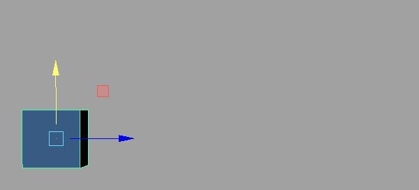
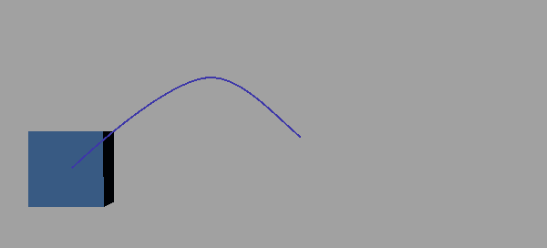
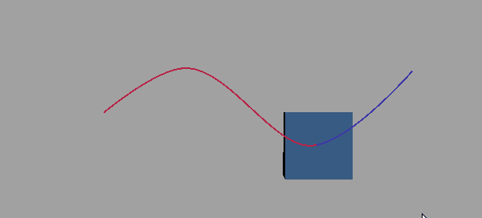
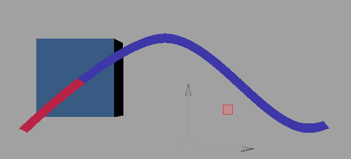
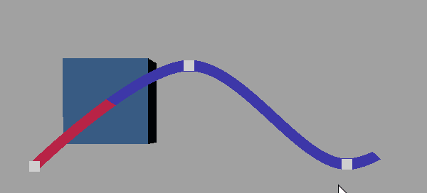
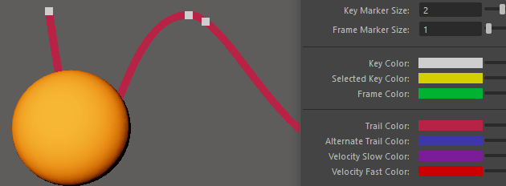

使用运动轨迹可查看动画流。本主题介绍了如何将运动轨迹附加到对象，或者对现有运动轨迹进行更改或调整。在运动轨迹编辑器(Motion Trail Editor)中查找“运动轨迹编辑器”(Motion Trail Editor)选项的描述和示例。
创建运动轨迹
- 选择要预览的动画对象。在此示例中，有一个蓝色立方体，其中包含一段简单动画。

- 在“动画”(Animation)菜单集 (F4) 中，选择“可视化 > 打开运动轨迹编辑器”(Visualize > Open Motion Trail Editor)。将显示“运动轨迹编辑器”(Motion Trail Editor)。
- 设置您希望轨迹使用的选项，例如，如果希望仅在选择对象时显示运动轨迹，请将“固定/绘制”(Pinning/Draw)设置为“选择时绘制”(Draw When Selected)。如果要始终查看轨迹，请选择“始终绘制”(Always Draw)。
也可以在创建轨迹后，在运动轨迹编辑器(Motion Trail Editor)中更改这些选项。注： 同一对象上可以有多个运动轨迹。名称按数字递增，例如 objectname_motionTrail1、Objectname_motionTrail2，等等。
- 设置“路径模式”(Path Mode)。在此示例中，立方体设置为“之前和之后”(Before and After) ，这将绘制轨迹以显示当前帧之前和之后的动画。
- 选定对象后，单击“创建运动轨迹”(Create Motion Trail)。
运动轨迹将跟随对象上的动画一起显示在“运动轨迹编辑器”(Motion Trail Editor)中，并且 motionTrail1HandleShape 条目将显示在运动轨迹列表中。
- 回放动画。

- 若要更改运动轨迹的显示方式，请在视口中选择相关运动轨迹，然后更改“运动轨迹编辑器”(Motion Trail Editor)的“显示选项”(Display Options)部分中的“轨迹厚度”(Trail Thickness)设置。

编辑运动轨迹
可以通过编辑动画的运动轨迹来更改其路径。
编辑现有运动轨迹
- 选择相关运动轨迹，然后在运动轨迹编辑器(Motion Trail Editor)的“显示选项”(Display Options)部分中启用“显示关键帧”(Show Keyframes)。

- 单击轨迹上的关键帧，然后平移该关键帧 (W)，使运动轨迹弯曲。

隐藏或删除运动轨迹
删除运动轨迹
- 在运动轨迹列表中选择相关运动轨迹，然后单击“删除选定轨迹”(Delete Selected Trail)。
- 若要从场景中移除所有轨迹，请选择“删除所有轨迹”(Delete All Trails)。
也可以在视口或大纲视图(Outliner)中选择相关运动轨迹（名称类似于 motionTrail1Handle），然后按 Delete 键。
隐藏运动轨迹
在“运动轨迹编辑器”(Motion Trail Editor)中，在运动轨迹列表中选择相关运动轨迹，然后单击相应的眼睛图标 。
也可以在大纲视图(Outliner)中选择相关轨迹（名称类似于 motionTrail1Handle），然后按 Ctrl+H。若要再次显示该轨迹，请在“大纲视图”(Outliner)中选择它，然后按 Shift+H。
自定义运动轨迹颜色
在运动轨迹编辑器(Motion Trail Editor)中，没有设置用于将运动轨迹的颜色与场景中的对象相匹配。

- 在“运动轨迹编辑器”(Motion Trail Editor)中，选择运动轨迹。
- 在编辑器的“显示设置”(Display Settings)区域中单击“轨迹颜色”(Trail Color)颜色图块，以打开颜色历史(Color History)窗口。
- 使用吸管工具
 选择对象的颜色。
选择对象的颜色。